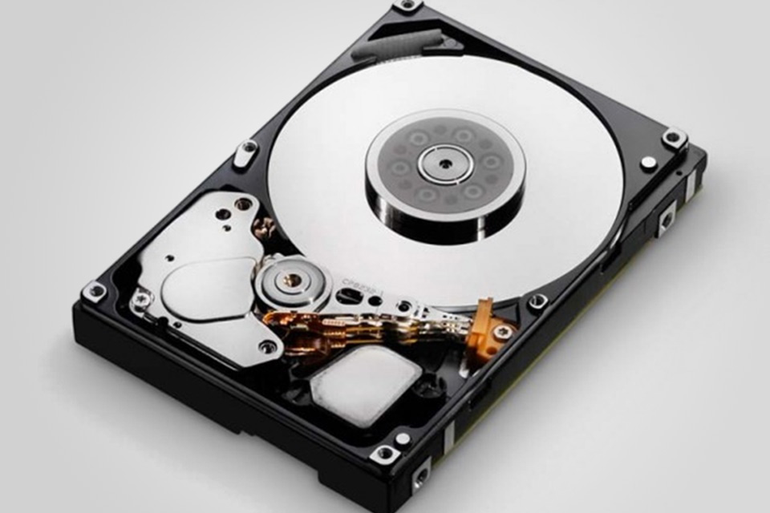

Aqui estão os componentes essencias para montar um computador.
O que é placa de vídeo e qual sua importância?
Talvez você já tenha ouvido falar de uma placa
gráfica.,e até sabe que existe uma dentro do seu computador, mas não tem certeza o que ela faz?
A placa de vídeo é um dos principais componentes de qualquer PC, especialmente para computadores
voltados à jogos, e geralmente é um dos componentes mais caros do seu PC.
A placa gráfica é a
peça do seu computador responsável por gerar as imagens que você vê na tela, seja essa página da
web, um documento no Word ou mesmo um filme ou um game. Essa peça também é conhecida como unidade de
processamento gráfico (ou GPU), e pode variar de "gráficos integrados" simples, que fazem parte da
placa-mãe ou do processador, a placas de expansão maiores e mais poderosas.
O que é a placa mãe?
A placa mãe não levaria esse nome à toa, certo? Ela é o sistema que une
todos os componentes de um computador, permitindo que eles funcionem de forma organizada. Sua peça
dispõe de todos os caminhos e redes que permitem a troca de informação entre todas as outras:
processadores, memórias, sistemas de armazenamento, placa de rede e tudo o mais.
Também é a
placa mãe que alimenta todos esses componentes internos e mais os periféricos (como mouse, webcam e
teclado) com a energia que sai da tomada e entra na CPU por meio da fonte.

Muitas vezes quando computadores estão lentos (o que nem sempre é verdade, geralmente é por causa de
um HDD que seu computador fica lento) ou com algum problema é comum colocar a culpa no processador.
De fato, algumas vezes o componente é realmente culpado por um mau funcionamento, mas a questão é
que um grande número de pessoas não sabem o que é um processador e tampouco como eles funcionam.
O que é um processador?
Vamos começar pelo básico, o processador é a unidade central de processamento de um computador
(CPU), ele funciona como o cérebro do computador, pois interage e faz as conexões necessárias entre
todos os programas instalados. Neste processo, ele também interpreta as informações enviadas pelos
programas, realiza diversas operações, inclusive gerando a interface que nós interagimos quando
usamos um computador.
Os processadores são colocados na Placa-Mãe de um computador, através de soquetes e sua estrutura é
composta por bilhões de transistores.
O que é memória RAM e qual é sua função?
A memória RAM é um tipo de tecnologia que permite o acesso aos arquivos armazenados no computador.
Diferentemente da memória do HD, a RAM não armazena conteúdos permanentemente. É responsável, no
entanto, pela leitura dos conteúdos quando requeridos.
A memória RAM é um tipo de tecnologia que permite o acesso aos arquivos armazenados no computador.
Diferentemente da memória do HD, a RAM não armazena conteúdos permanentemente. É responsável, no
entanto, pela leitura dos conteúdos quando requeridos. Ou seja, de forma não-sequencial, por isso, a
nomenclatura em inglês de Random Access Memory (Memória de Acesso Aleatório).

O que é um Disco Rígido ou HD?
O outro significado para a sigla HD é "Hard Disk", ou "Disco Rígido". Este hardware é um componente
de um computador ou outro equipamento que tem a finalidade de armazenar dados. Isso quer dizer que
independentemente se ele está desligado ou não, as informações contidas nele permanecem armazenadas
para utilização.
Geralmente, a unidade GB (gigabyte) é utilizada para contar a capacidade de armazenamento de um HD.
Existem HDs que possuem como unidade de medida o TB (terabyte), onde cada 1 TB equivale a 1024 GB.
O que é um SSD?
SSDs (Solid State Drives) recebem esse nome para se diferenciar dos HDDs (Hard Disk Drive, que
chamamos de discos rígidos), já que não utilizam partes móveis. Ou seja, não sofrem com possíveis
falhas mecânicas, já que não há nada se movimentando dentro de um SSD. Mas a coisa não para por aí.
Ainda que discos rígidos sejam capazes de armazenar uma grande quantidade de dados por um custo
relativamente baixo, os SSDs são insuperáveis em termos de velocidade. O pior SSD que você encontrar
será, pelo menos, três vez mais ráṕido que um disco rígido de boa qualidade.
O que é o cpu-cooler?
O processador realiza milhões de cálculos por segundo. A atividade interna nele só é possível graças
à energia elétrica que transita de um lado para o outro. Acontece que essa grande carga de trabalho
gera calor, visto que os materiais oferecem resistência à passagem de corrente. Resultado? Os
processadores aquecem muito quando estão efetuando tarefas.
Para evitar a queima ou possíveis danos ao componente, é preciso resfriá-lo. O item-chave nessa hora
é o cooler (palavra do inglês que significa “refrigerador”). Uma solução de arrefecimento é
necessária para manter a temperatura do processador em um nível aceitável, garantindo o bom
desempenho durante o processamento de dados.
A fonte de energia, o componente mais importante para seu pc
A fonte de energia do computador ou, em inglês, PSU (Power Supply Unit — Unidade de Alimentação de
Energia), é responsável por converter a voltagem da energia elétrica, que chega pelas tomadas, em
voltagens menores, capazes de ser suportadas pelos componentes do computador. Essa peça gera valores
que variam entre 12, 5 e 3,3 volts.
Quanta energia consome um computador?
As fontes-padrão do mercado trabalham com uma média de 70% de eficiência máxima, ou seja, o valor
correspondente na etiqueta nunca é o valor real de energia que ela fornece. Para que o computador
funcione sempre em sua plena capacidade, é necessário verificar quanto os componentes estão
consumindo.Clique aqui para
calcular quantos
WATTS seu pc ira consumir.
O que é um gabinete de computador?
O gabinete do computador serve principalmente como uma forma de montar fisicamente e conter todos os
componentes reais dentro de um computador, como a placa–mãe, disco rígido, unidade óptica, SSD,
unidade de disquete, etc. Eles normalmente vêm com uma fonte de alimentação.
A caixa de um notebook, netbook ou tablet também é considerada um gabinete, mas como eles não são
adquiridos separadamente ou muito substituíveis, a caixa do computador tende a se referir àquela que
faz parte de um PC desktop tradicional.
Alguns fabricantes de gabinetes de computador populares incluem Thermaltake, Corsair, NZXT e Antec.
A caixa do computador também é conhecido como torre, cpu, unidade de sistema, unidade base,
gabinete, box, chassi e case.
A partir de agora adotaremos o termo gabinete para nos referir a ele.
Este site tem o intuito de auxiliar uma pessoa sem conhecimento algum sobre hardware na hora de montar seu computador , tanto para office quanto para games.
Subir